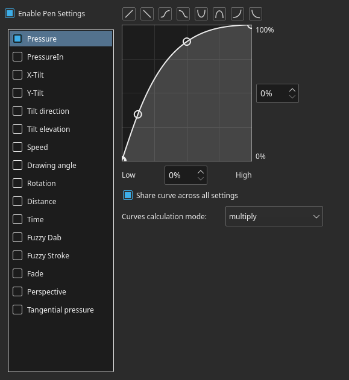

Photoshop 使用者轉用 Krita 入門介紹¶
引言¶
This document gives an introduction to Krita for users who have been using Photoshop. The intention is to make you productive in Krita as fast as possible and ease the conversion of old habits into new ones. This introduction is written with Krita version 2.9 and Photoshop CS2 and CS3 in mind. But even though things may change in the future, the basics will most likely remain the same. The first thing to remember is that Krita is a 2D paint application while Photoshop (PS) is an image manipulation program. This means that PS has more features than Krita in general, but Krita has the tools that are relevant to digital painting. When you get used to Krita, you will find that Krita has some features that are not part of PS.
Krita 的基本操作¶
This chapter covers how you use Krita in the basic operations compared to PS.
檢視和畫面顯示¶
控制畫布¶
In Krita you can navigate your document using all these methods:
'Mouse wheel':
 down and up for zoom, and press
down and up for zoom, and press  down to pan your document.
down to pan your document.'Keyboard': with the + and - keys on your numpad keyboard.
As in Photoshop, Painter, Manga Studio: use the Ctrl + Space shortcut to zoom, and the Space key to pan.
備註
If you add use the Alt key and so do a Ctrl + Alt + Space shortcut you’ll have a discrete zoom.
旋轉¶
Rotate the canvas with the Shift + Space, or Ctrl + [ and Ctrl + ] shortcuts or with the 4 or 6 keys. Reset the rotation with the 5 key.
鏡像顯示¶
Press the M key to see your drawing or painting mirrored in the viewport.
移動及變形¶
Moving and Transformation of contents is done using tools in Krita. You can then find them in the toolbar. If you are familiar with the way to move layers in PS by holding down the Ctrl key, you can do the same in Krita by pressing the T key for the move tool (think ‘T’ranslate) or the Ctrl + T shortcut for transform tool.
Press the B key to go back to the brush tool when the transformation or translation is done. To find how to make advanced deformations using the Transform tool, do not right-click on the on-canvas widget: all the option are in the Tool Options docker.
Changes can be applied with the Enter key for the Transform tool.
備註
Move tool changes are auto-applied.
選擇和選取區域¶
Like in PS, you can use the Alt or Shift keys during a selection to remove or add selection to the active selection. In addition, you can hold Alt + Shift to intersect. Krita also offers sub tools for this, and you can select them in the Tool Options if a select tool is active. These sub tools are represented as icons.
備註
You cannot press the Ctrl key to move the content of the selection (you have to press the T key or select the Move Tool).
Some other tips:
If you want to convert a layer to a selection (to select the visible pixels), right-click on the layer docker, and choose Select Opaque.
If you use a polygonal selection tool, or a selection which needs to be ‘closed’, you will be able to do it or by doing double-click, or by using a Shift +
 shortcut.
shortcut.
You can scale selection. To do this, choose .
備註
Also, in the Select menu there are more classical options to grow, shrink, feather, border, etc.
If you enable Show Global Selection Mask (Select menu) you can scale/rotate/transform/move or paint on selection like on regular grayscale layer.
Ctrl + H: Show / Hide selection (same shortcut)
Ctrl + A: Select All
Ctrl + Shift + A: deselect All (and not the Ctrl + D shortcut as in PS)
Note for Gimp user: Krita auto-expands and auto defloats new layers created from a selection after pressing the Ctrl + C and Ctrl + V shortcuts, so you do not have to worry about not being able to paint outside the pasted element.
備註
This doesn't work as intended right now. Intersect is a selection mode which uses the T key as the shortcut. However, the T key is also used to switch to the Move tool, so this shortcut is not functional right now. You have to use the button on the Tool Options.
圖層處理¶
The most common default shortcuts are very similar in PS and Krita:
Ctrl + J: duplicate
Ctrl + E: merge down
Ctrl + Shift + E: flattens all (not the Ctrl + Shift + M shortcut as in PS)
Ins: insert a new paint layer
Ctrl + G: create new layer group and move selected layers to this group
群組與混色模式（混合模式、合成模式）¶
The group blending mode in Krita has priority over child layers and overrides it. This can be surprising for Photoshop users. On Photoshop you can use groups to just clean your layer stack and keep blending mode of your layer compositing through all the stack. In Krita the compositing will happen at first level inside the group, then taking into account the blending mode of the group itself. Both systems have pros and cons. Krita’s way is more predictable according to some artists, compositing-wise. The PS way leads to a cleaner and better ordered layer stack visually wise.
同時變形或移動多個圖層¶
You can select multiple layers on the stack by holding down the Shift key as in PS, and if you move the layer inside a group you can move or transform the whole group -- including doing selection on the group and cut all the sub layers inside on the fly. You can not apply filters to group to affect multiple layers.
剪裁遮色片 (Clipping Masks)¶
Krita has no clipping mask, but there is a simpler workaround involving layer groups and Inherit alpha (see the alpha icon). Place a layer with the shape you want to clip the other with at the bottom of a group and layers above with the Inherit alpha option. This will create the same effect as the “clipping mask” PS feature, and also keeps the layer stack cleaner than the clipping mask implementation does.
This process of arranging groups for inherit alpha can be done automatically by Ctrl + Shift + G shortcut. It creates a group with base layer and a layer above it with the Inherit alpha option checked by default.
「穿過」(Pass-through) 混合模式¶
This is available in Krita, but not implemented as a blending mode. Rather, it is an option next to ‘inherit alpha’ on group layers.
智慧型圖層¶
Instead of having smart layers that you can do non-destructive transforms on, Krita has the following set of functionality:
- File Layers
These are layers which point to an outside file, and will get automatically updated if the outside file changes. Starting from version 4.0 users can convert an existing layer into a file layer by
 clicking on it and doing or by going to . It will then open a save prompt for the file location and when done will save the file and replace the layer with a file layer pointing at that file.
clicking on it and doing or by going to . It will then open a save prompt for the file location and when done will save the file and replace the layer with a file layer pointing at that file.- Clone Layers
These are layers that are an ‘instance’ of the layer you had selected when creating them. They get updated automatically when the original layer updates.
- Transform Masks
These can be used to non-destructive transform all layer types, including the file and clone layers.
- Filter Masks
Like adjustment layers, these can apply filters non-destructively to all layer types, including file and clone layers.
圖層樣式¶
You can apply Photoshop layer-styles in Krita by right-clicking any given layer type and selecting ‘layer style’ from the context menu. Krita can open and save ASL files, but not all layer style functionality is there yet.
其他¶
Layers and groups can be exported. See the Layer top menu for this and many other options.
備註
Krita has at least 5 times more blending modes than PS. They are sorted by categories in the drop-down menu. You can use the checkbox to add your most used to the Favorite categories.
繪畫工具¶
This is Krita's strong point. There are many paint tools, and they have a lot of options.
工具¶
In Krita, there is a totally different paradigm for defining what ‘tools’ are compared to PS. Unlike in PS, you will not find the brush, eraser, clone, blur tool, etc. Instead, you will find a way to trace your strokes on the canvas: freehand, line, rectangle, circle, multiple brush, etc. When you have selected the ‘way to trace’ you can choose the way to paint: erasing / cloning / blurring, etc are all part of way to paint managed by the brush-engines options. These brush engine options are saved into so-called presets, which you can find on Brush presets. You can fine tune, and build your own presets using the Edit Brush Settings icon on the top toolbar.
擦除¶
In Krita, the eraser is not its own tool; it is a Blending mode (or Composite mode). You can toggle between erase mode and paint mode by pressing the E key, individually for each of your brushes.
常用快捷鍵¶
Shift: Grow or Shrink the brush size (or the [ and ] keys).
/: Switch last preset selected and current (ex: a pencil preset, and an eraser preset).
K and L: Increment Darker and Lighter value of the active color.
I and O: Increment opacity plus or minus.
D: Reset color to black/foreground and white/background.
X: Switch background and foreground colors.
Shift + I / Shift + N / Shift + M: A set of default keyboard shortcuts for accessing the on-canvas color selector.
備註
Some people regard these shortcuts as somewhat unfortunate. The reason is that they are meant to be used during painting and the left Shift key is at the opposite end of the keyboard from the I, M and N keys. So for a right-handed painter, this is very difficult to do while using the stylus with a right hand. Note that you can reassign any shortcut by using the shortcut configuration in .
防震、路徑平滑化¶
Using the freehand ‘paint with brush’ tool that you can find on the Tool Options, more settings for smoothing the path and stabilization of your brush strokes are available.
全域筆壓調整曲線¶
If you find the feeling of Krita too hard or too soft regarding the pressure when you paint, you can set a softer or harder curve here:
色階調整¶
Like in PS, you can use the classic filters to adjust many things while painting:
Ctrl + L: Levels
Ctrl + U: HSV adjustment
Ctrl + I: Invert
加亮、加深、模糊工具¶
Unlike Photoshop, where these are separate tools, in Krita, they are available via the Filter Brush Engine, which allows you to apply the majority of Krita's filters in brush form.
佈景主題¶
If you don’t like the dark default theme of Krita go to: , and choose a brighter or darker theme. If you don’t like the color outside your viewport go to: , and change the Canvas border color.
Krita 比 Photoshop 優勝之處¶
As mentioned in the introduction, Krita is a specialized paint application. Thus, it has specialized tools for painting. Similar tools are not found in more generalized image manipulation applications such as PS. Here is a short list of the most important ones.
筆刷引擎¶
Krita has a lot of different so-called brush engines. These brush engines define various methods on how the pixels end up on your canvas. Brush engines with names like Grid, Particles, Sketch and others will bring you new experiences on how the brushes work and a new landscape of possible results. You can start customizing brushes by using the brush-settings editor, which is accessible via the toolbar, but it's much easier to just press the F5 key.
感測器設定曲線¶
You can set setting to pressure (speed/distance/tilt/random/etc.) relation for each brush setting.
浮動畫具板¶

Easily to be found on , the pop-up palette allows you to quickly access brushes, color history and a color selector within arm's reach. The brushes are determined by tag, and pressing the lower-right configure button calls a drop-down to change tags. This allows you to tag brushes in the preset docker by workflow, and quickly access the right brushes for the workflow you need for your image.
變形工具和遮罩¶
The Krita transformation tool can perform transformations on a group and affect child layers. There are several modes, like free, perspective, warp, the powerful cage and even liquify. Furthermore, you can use transformation masks to apply transforms non-destructively to any layer type, raster, vector group, you name it.
Transform masks allow non-destructive transforms¶
儲存增量版本¶
You can save your artwork with the pattern : myartworksname_001.kra, myartworksname_002.kra, myartworksname_003.kra etc., by pressing a single key on the keyboard. Krita will increment the final number if the pattern "_XXX" is recognized at the end of the file's name.

This feature allows you to avoid overwriting your files, and keep track to your older version and work in progress steps.
濾鏡：色彩轉為 Alpha（透明度）¶
If you want to delete the white of the paper from a scanned artwork, you can use this filter. It takes a color and turns it into pure transparency.

大量混色模式¶
If you like using blending modes, Krita has many of them -- over 70! You have plenty of room for experimentation. A special system of favorite blending modes has been created to let you have fast access to the ones you use the most.
繪畫輔助尺¶
Krita has many painting assistants. This is a special type vector shapes with a magnetic influence on your brush strokes. You can use them as rulers, including with shapes other than just straight.

Krita's vanishing point assistants in action¶
多重筆刷：旋轉對稱、並行、鏡像對稱、雪花對稱¶
Krita's Multibrush tool allows you to paint with multiple brushes at the same time. Movements of the brushes other than the main brush is created by mirroring what you paint, or by duplicating it by any number around any axis. They can also be used in parallel mode.

多款不同類型的選色器¶
The Advanced Color Selector docker offer you a wide choice of color selectors.

個別檢視的色彩濾鏡¶
Using the LUT docker, Krita allows you to have a separate color correction filter per view. While this is certainly useful to people who do color correction in daily life, to the artist this allows for seeing a copy of the image in luminance grayscale, so that they instantly know the values of the image.

Using the LUT docker to change the colors per view¶
HDR（高動態範圍）色彩作畫¶
This same LUT docker is the controller for painting with HDR colors. Using the LUT docker to change the exposure on the view, Krita allows you to paint with HDR colors, and has native OpenEXR support!

Painting with HDR colors¶
Krita 欠缺的功能¶
Again, Krita is a digital paint application and Photoshop is an image manipulation program with some painting features. This means that there are things you can do in PS that you cannot do in Krita. This section gives a short list of these features.
濾鏡¶
Krita has a pretty impressive pack of filters available, but you will probably miss one or two of the special filters or color adjustment tools you often use in Photoshop. For example, there is no possibility to tweak a specific color in HSV adjustment.
自動修復、修補工具¶
Krita does not have an automatic healing tool. It does, however, have a so-called clone tool which can be used to do a healing correction, although not automatically.
錄製巨集¶
Macro recording and playback exists in Krita, but it is not working well at this time.
文字工具¶
The text tool in Krita is less advanced than the similar tool in Photoshop.
變形時預𧢂圖層混色¶
When you transform a layer or a selection in Krita, the transformation appears on the top of your layer stack ignoring the layer blending mode.
提示
Starting from Krita 5.0, the performance setting "Use in-stack preview in Transform Tool" allows for the layer blending mode to be previewed during transformation.
Photomerge¶
You may have used this tool in Photoshop to seamlessly and automatically stitch together a drawing that was scanned in segments. Krita does not have an equivalent, though an alternative is to use Hugin, which is cross-platform and free, just like Krita.
其他¶
Also, you cannot ‘Export for web’, ‘Image Ready’ for GIF frame or slicing web image, etc.
總結¶
Using these tips you will probably be up to speed with Krita in a short time. If you find other things worth mentioning in this document we, the authors, would be interested in hearing about them. Krita develops fast, so we believe that the list of things possible in Photoshop but not in Krita will become shorter in time. We will maintain this document as this happens.